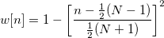
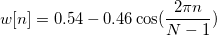
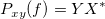
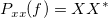
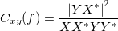

- 矩形ウィンドウ
![w[n] = \begin{cases} 1, & \mbox{if }0 \leq n \leq N-1 \ 0, & \mbox{otherwise } \end{cases}](../images/Algorithm_(Cohere)/math-1dff02816a08f5abee4db570718fae2e.png "w[n] = \begin{cases} 1, & \mbox{if }0 \leq n \leq N-1 \ 0, & \mbox{otherwise } \end{cases}")
- Welchウィンドウ

- Triangularウィンドウ：
- 奇数:
/math-0301923ac9ba030df614e6d597b61aca.png "w(n)=\frac 2{N+1}(\frac {N+1}2-|n+1-\frac {N+1}2|)")
- 偶数:
/math-8e83f30fc0b782e1d8b13c070ff8819d.png "w(n)=\frac 2N(\frac N2-|n+1-\frac {N+1}2|)")
- Bartlettウィンドウ
![w[n]=\frac 2{N-1}\left[ \frac{N-1}2-\left| n-\frac{N-1}2\right| \right] \,\!](../images/Algorithm_(Cohere)/math-e66a9f4dcc74b3ab6be533c1c74db331.png "w[n]=\frac 2{N-1}\left[ \frac{N-1}2-\left| n-\frac{N-1}2\right| \right] \,\!")
- Hannウィンドウ：
![w[n]=\frac 12\left[ 1-\cos (\frac{2\pi n}{N-1})\right] \,\!](../images/Algorithm_(Cohere)/math-f625e1fbe6f2ba1e906c542714a5a198.png "w[n]=\frac 12\left[ 1-\cos (\frac{2\pi n}{N-1})\right] \,\!")
- Hamming ウィンドウ:

- Blackmanウィンドウ
![w[n]=0.42-0.5\cos (\frac{w\pi n}{N-1})+0.08\cos (\frac{4\pi n}{N-1}) \,\!](../images/Algorithm_(Cohere)/math-53be39cb73653898ae42aa3e07614275.png "w[n]=0.42-0.5\cos (\frac{w\pi n}{N-1})+0.08\cos (\frac{4\pi n}{N-1}) \,\!")
- Gaussianウィンドウ
![w[n]=exp(-0.5(Alpha( \frac{2n}{N-1}-1 ))^2) \,\!](../images/Algorithm_(Cohere)/math-fab7a042f67f1dfb6dc5556e228508ec.png "w[n]=exp(-0.5(Alpha( \frac{2n}{N-1}-1 ))^2) \,\!")
- AlphaはAlphaパラメータで指定されます。
- Kaiserウィンドウ
![w[n]=I(beta*\sqrt{1-(\frac{2n}{N-1}-1)^2}) / I(beta) \,\!](../images/Algorithm_(Cohere)/math-04b7bbeb549a0b1d5ee22e3d50305676.png "w[n]=I(beta*\sqrt{1-(\frac{2n}{N-1}-1)^2}) / I(beta) \,\!")
- I(ix)はBessel関数を示し、betaはBetaパラメータで指定されます。
パワースペクトル密度は相関のフーリエ変換です。離散相関定理から、2つの信号の相関のフーリエ変換が1つの信号のフーリエ変換ともう一方の信号の共役フーリエ変換の積に等しいことが分かっています。したがって、パワースペクトルの密度はフーリエ変換で計算できます。そして、2つの信号xとyのクロスパワー密度は次式で計算できます。

ここで、XおよびYは、それぞれxとyのフーリエ変換で、* は、複素共役を表しています。
同様に自動パワー密度は次式で計算できます。

したがって、コヒーレンスの計算は次のように書き直すことができます。

入力信号xとyは、重なり合うセクションに分割されます。各セクションのコヒーレンスは、上記の数式を使って計算されます。
サンプリング間隔の自動計算
サンプル間隔で<自動>を選択すると、計算に必要なサンプル間隔が自動で計算されます。
自動的に計算されるサンプリング間隔は、時間データの増加の平均で、これは通常入力信号と結びついているXデータが使われます。結びついているX列が無ければ、行番号が使われます。Originが増加の平均を取得するのに失敗した場合、サンプリング間隔は1にセットされます。
ウィンドウ法
FFTで使用されるウィンドウ法を指定します。デフォルトのオプションはHanningです。

